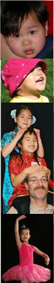

Links & Resources
Adoption
Jane Brown articles about her and her work.
Attach-China focuses on attachment and bonding issues, with a particular focus on Chinese adoptions.
FCCBC Group is a forum for FCCBC families to talk about adoption, issues, and the organization.
At FCC we are always looking for new ideas, and the FCCBC Survey is your opportunity to influence FCC, to make us more a part of your life - but more importantly - more a part of your child's life. This survey will take from 5-15 minutes.
Canadians Adopting from China is a Yahoo discussion group for Canadians committed to adoption from China, and who are either in process or already home. Lots of great resources and information from many who have already adopted.
Canada Post Adoption China Topics (CanPACT) is another Yahoo discussion group for Canadian parents who adopted a child from China and wish to seriously discuss post-adoption topics. As they grow and develop, our Chinese-born children present a changing set of challenges for themselves and for us their adoptive parents. To help meet those challenges, this is an impartial, non-agency, Canadian support group where we may freely discuss a wide-ranging series of post-adoption topics within the Canadian context of China adoption.
Adoptive Families Association of BC is an excellent resource for adoptive families or those considering adopting. AFABC has a newsletter, an extensive lending library of books and videos, offers educational sessions, and more.
Families with Children from China is FCCBC's parent organization. It also provides a list of adoption discussion groups and sites.
Adoption Agencies in BC that work with families adopting from China
- The Adoption Centre
- Sunrise Adoption Centre
- Family Services of Greater Vancouver
- Choices adoption and counselling services
- Hope Adoption Services
China Adoption Centre is maintained by the Chinese government departments responsible for managing adoptions in China.
Our Chinese Daughters Foundation supports adoptive families in many ways including tours of China, resources, and fundraising for children in orphanages.
Association for Research in International Adoption disseminates research findings to the international adoption community. The site contains links for adoptive parents to learn more about the issues that may impact internationally adopted children.
Personal China Adoption Stories is especially for those who are waiting or thinking about it.
Adoptive Families Magazine is an adoption information source for families before, during, and after adoption.
Guide to International Adoption has been prepared for Ontario families, but it has some excellent information.
Culture
From a Chinese Orphanage to a Batmitzvah is an article in the New York Times newspaper about girls who are growing up in Jewish families. (NOTE: You have to register to read the article, but it's free.)
Cultural Centre of Vancouver http://www.cccvan.com/ Lots of info on Chinese culture and info on events and courses here in Vancouver .
Chinese Embassy in US http://www.china-embassy.org/eng/ An excellent site full of info on Chinese culture, government, history, and the issues that face China today.
Leon Poon's Chinese History Site. http://www-chaos.umd.edu/history/welcome.html
Lonely Planet China guide http://www.lonelyplanet.com/worldguide/destinations/asia/china/ Lots of info and a cool map.
China the Beautiful http://www.chinapage.com/china.html A lovely site maintained by Dr. Ming L. Pei, who's love of Chinese culture is enormous.
http://www.zhongwen.com/ Chinese Characters and culture, history of characters, online dictionary
Asia for kids http://www.asiaforkids.com/ A company that sells Asian items such as Chinese dolls for kids. Not cheap, but cool.
China Sprout http://www.chinasprout.com/shop A fun site that contains lots of cultural stuff for sail, such as music, clothing and art, and resources on China
China Guide http://www.china-guide.com/ Collection of culture and retail. Information on acupuncture, Chinese medicine, education, entertainment.
Mandarin tools http://www.mandarintools.com/ Dictionary, (character lookup!) Flashcards, all kind of great stuff on Mandarin.
My home town http://www.magmacom.com/~mtooker/cities/index.htm contains information on just about every major city in China .
http://www.childbook.com/ Lots of Chinese stories, music and videos for kids for sale.
http://www.chinesetapes.com/ Great site with lots of cultural tapes for kids, movies, music, DVDs. Disney movies in Mandarin!
Chinese Canadian Photo Exhibit http://www.ccnc.ca/toronto/history/index.html An interesting photo and text display of Chinese Canadian lives.
Chinese culture camps are listed at www.adoptivefamilies.com.
Several organizations offer homeland tours to China: Our Chinese Daughters Foundation is spearheaded by Dr. Jane Liedtke, Lotus Travel is based in Seattle, Adoptive Family Travel is based in Wisconsin, and Children's Bridge is based in Ontario.
Language
To add to or update this information, please email
Multiple locations
Ying Hua Chinese School
Burnaby, Richmond, Coquitlam and Vancouver East and West
www.kckc.com/yhcs
The mission of Ying Hua Chinese School (YHCS) is to promote Chinese
culture and multiculturalism in Canada. We teach students Chinese
language through classroom instructions, activities, and other
extracurricular events.
Parent note - We have one of our daughters enrolled in a Saturday morning Mandarin pre-school class. We are very impressed with the quality. The school is well organized. The Mandarin pre-school class is a fun low pressure environment for young learners. -- Ross McPherson
Burnaby
Seaforth Chinese School
7881 Government St., Burnaby.
www.geocities.com/seaforthchineseschool
Contact: Lianna Mah 604-420-3460/Wendy Wong 604-931-8623
The school runs from September to June. Classes are every Tuesday,
4:00 to 5:30 pm.
Norburn Chinese School at Lochdale Community School in North Burnaby
.
Contact: Anne Lee, principal, at 604-299-4398.
Coquitlam
Coquitlam Gleneagle Secondary School , operated by the Chinese
Cultural Centre
Saturday mornings
Mandarin and Cantonese classes from preschool through secondary.
Vancouver
Vancouver Community College (VCC)
Broadway campus at King Edward
Saturday mornings
Adult classes held at the same time
Parent note - The Chinese school at Vancouver Community College is fairly traditional. Classes are 2.5 hours long and students are tested twice a term. I am somewhat uncomfortable with testing 4-5 year olds but in general it has been a positive experience for our family.
Langara College
100 West 49th Avenue
Saturday mornings or afternoons – 2.5 hours in length
Classes available for children and adults.
Contact Langara First Mandarin School : 604-323-5624
mandarin@langara.bc.ca
or see the Langara Continuing Education prospectus each term.
www.langara.bc.ca
Summer programs also available
Pui Ying Christian Services Society www.puiying.org
Trafalgar Elementary School , Vancouver
Cantonese on Mondays, Mandarin on Wednesdays, 1.5 hour classes
Offer classes in 10 locations in Vancouver and Richmond .
One week long half day camps Chinese Language and Culture Workshop,
Chinese Painting for Children, etc.
Office: #103 - 2880 W. 4th Ave , Vancouver
tel 604-733-3418
Chinese Cultural Centre http://www.cccvan.com/
Sites:
- Chinatown - Mandarin and Cantonese offered on Saturday am & pm Sunday am & pm
- Richmond
- West Vancouver , Sentinel Secondary School
- Westside Vancouver, York House School
- Eastside Vancouver, Vancouver Technical School .
Children's Kingdom Montessori Centre
4720 Elgin Street
604-872-8898
Contact .
Parent note - We are thrilled with everything about it. The instructors are fantastic, the space is airy and the educational toys are new, and Chinese culture is incorporated into all aspects of the lessons: the practical life section teaches the kids to use chopsticks, the art lessons have included calligraphy, and music is both in English and Mandarin.